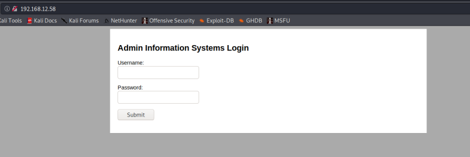

3. Enumerate
Let's see what there is on port 80.
a) Open a browser and go to http://192.168.12.58
Output:

There isn't anything on the webserver, no directories, no files, nothing.
b) Let's try to brute-force the login page.
We'll use “Burpsuite” to do it.
 Index
Index